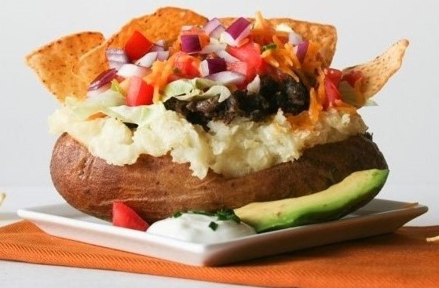

Nancy's Delights
appetitzers
King Crab Appetizers
Buffalo Wings
Boiling Corn On The Cob
Baked Potato

entrees
Cold Soba Noodles
Three Bean Macaroni Salad
White Cheddar Mac & Cheese
desserts
Japanese Cotton Cheesecake (video)
Bunny Blondies
Yeung Ji Gum Lo
Chocolate Cherry Stack Cake